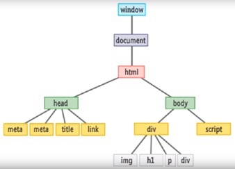

A website is like a house. Each house has rooms and each room contains furniture and electric appliances. Similarly, the website has different sections such as header, body and footer, and each section contain text and images.
HTML (HyperText Markup Language) is like the frame of a house. It organises the presents elements of website in a structured hierarchy.
[code language = “html”]
house
2nd floor
1st floor
bed room
kitchen
entrance
living room …. And so on.
[/code]
CSS ( ) is like the look of the house. Not all the room is same design. Here is the example of CSS style the rooms in this manner:
[code language = “css”]
Bedroom ={
Width: 3m;
Length: 3.6m;
Height: 2.4m;
Wall: 1mm thick wall paper;
Floor: wool carpet
}
[/code]
While the JavaScript is like the moving pieces or electric appliances. For instants,
[code language = “JavaScript”]
$(“doorbell”).click(function(){
alert(“Ding Dong”)
})
$(“input[type=televisionRemote]”).change (function(){
var buttonPressed = $(this).val();
if (buttonPressed === “powerButton”){
turnOffTelevision();
} else {
goToChannel(“buttonPressed”)
}
})
[/code]
Now, until now what we have describe is all we can have direct access aka “Front End”. For those what you can’t see or touch are like wiring, pipe, and server-side are called aka “Back End”.
Static website that built based on the foundation of HTML and CSS, has no security. While those need a tighter security website would require you or use to key in the login name and password before it can allow you to enter. Similarly, a website with “backend” will have all the doors locked, unless you have the key to enter the house.
There are too many TV channels to choose from when we want to watch TV. Therefore, you frequently consult your TV Channel guard, the guard consists a very helpful table associate a channel number with a TV Station, with a TV program that is playing on that station right now. This relationship is very similar to a server that allow us to store, modify and delete data inside the server.
Control frow of a program is the order in which the program's code executed. It normally regulated by conditional statement, loops and function calls. The loop can be if statement, for and while loops.
Driving car to work in the morning routiune can be used to explain the relationship between the control flow and looping. Control flow of driving a car to work will be first unlock the car, then start the engine, and in between the start point till the destination, there is a lot of swifting gears and push the break pedal to stop the car, and repeat the process. While push on break pedal is like calling a 'break' function in the programm; and swifting the gear to let the wheel keep rotating at the same speed is the looping procedure. As far as the condition of looping is still met, it will keep on turning the wheel.
The DOM stands for Document Object Model and it is the glue that ties HTML, CSS and JavaScript together.

It pretty much depend what you want to do with the data. Let’s say you have an arrays
var todos = [“item 1”, “item 2”, item 3”];
//Just to DISPLAY data from arrays. You can use console.log to display it.
console.log (todos);
// you just want to display certain properties inside the arrays, let’s say item # 3.
Console.log (todos[2]);
//To add to arrays. You use var name connect with a notation .push (var name). Note use () after the .push command and not [ ];
todos.push (todo);
//to change the arrays’ data. We use the index value in the array, in this case is position, such as todo [0] = newValue refer to the item 1 in the array. Note: we also using [ ] for the position instead of ();
todos [position] = newValue;
//to delete the data in the arrays. Note: we using () follow by .splice command and not [ ].
todo.splice (position, 1); // (position, 1) position here referring to the start of the position in index for delete, and ‘1’ here referring to only delete 1 item, if you need to delete 2 items, just change it to 2.
In general, there is 2 main ways to access the properties in JavaScript using arrays. They are with a dot and with square brackets [ ]. Both value.x and value [x] access a property on value – but not necessarily the same property. The difference is in how x is interpreted. When using the a dot, the word after the dot is the literal name of the property. When using the square brackets, the expression between the brackets is evaluated to get the property name. Whereas value.x fetches the property of value named “x”, value [x] tries to evaluate the expression x and uses the result, converted to a string, as the property name. When in arrays, index value was assigned to each property, for example, index value [0], or [5]. Index value is the items position inside the arrays and it always start with 0 instead of 1.
Objects is a bit different from array. In JavaScript, we use Object to group related data with function together. Object only uses value.x to fetch the property of value name x.
Let’s setup an object first
var myComputer {
operatingSystem: “mac”,
screenSize: “15 inches”,
purchaseYear: 2011
} ;
//to display data in arrays. You type objectName.propertyName. it will give you the value.
........................................................................
myComputer.operatingSystem //-> “mac”
myComputer.purchaseYear => 2011
//however, since objects allow to have function inside the object, and if you would like to display your data will be like below:
var myComputer {
purchaseYear: “2011”,
sayPurchaseYear: function() {
console.log (this.purchaseYear);
} //myComputer is the object and sayPurchaseYear is called ‘the method’
........................................................................
myComputer.sayPurchaseYear(); //-> 2011
Function is just like cooking recipe or any type of recipe. Once you give it to someone and they used it, it will always produce the same output. It is useful because
1. It help the code writing more efficient and organise rather than repeating itself too many times.
2. Functions are one of the fundamental building blocks in JavaScript. A function is a JavaScript procedure—a set of statements that performs a task or calculates a value. To use a function, you must define it somewhere in the scope from which you wish to call it.